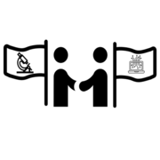

First Workshop
Tue 22 May 2018 by cyberambassadorsThe Cyber Ambassadors initiative held its first workshop on Tuesday, May 22, 2018. The session was scheduled for 10:00 am - 5:00 pm in a seminar room of the CMSE department, with provided lunch and snacks. Please email anyone listed in the 'contact' page of this website to ask about future workshops or provide suggestions!
Contact

If you have questions, please email the following:
Dr. Dirk Colbry: colbrydi@msu.edu
Dr. Katy Luchini Colbry: colbryka@msu.edu
Summary

Cyberinfrastructure (CI) is transforming research in science and engineering by supporting new methods for gathering, analyzing, modeling and simulating data. Many technical training programs exist to prepare CI Professionals, who are experts in developing CI and applying computational tools and techniques. Frequently, CI Professionals are asked to work with scientists …
read moreTimeline
The CyberAmbassador project is proposed over a three-year timeline, ideally beginning in November, 2017. Key milestones are outlined below:
-
External Advisory Board. The Board will be established at the beginning of the project and ideally convene for the first time at SC17. Meetings will be scheduled at least twice per …